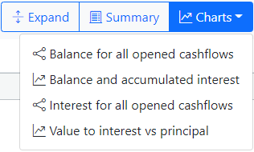

Cashflow tabs.
A tab represents an open cashflow. Clicking on a tab activates that particular cashflow and deactivates any previously active cashflow. Activating a tab shows that cashflow's event grid, amortization grid, summary, and status line.
Each tab displays the cashflow name, a button that displays the cashflow preferences, and another button ("X") that closes the cashflow. When a cashflow has been updated, an asterisk ("*") displays next to the cashflow name in the tab.
Creating a new cashflow.
When a new cashflow is created, a dialog is shown that asks for a name (for the cashflow) and the template group the cashflow will be based upon. The cashflow name and template group name are required fields. Template groups designate an initial template event that will be automatically copied into the cashflow.
Opening an existing cashflow.
An open dialog appears asking for a AmFn JSON file name. Usually, the JSON file represents a single cashflow. The AmFn Wasm JSON file may also contain any number of user preferences, templates, exchange rates, etc.
Closing an existing cashflow.
Close an opened cashflow. If the cashflow has been updated, an asterisk ("*") appears next to the caption of the cashflow tab and a close will be confirmed.
Saving an opened cashflow.
The currently selected cashflow is saved in the AmFn compliant JSON file format. The saved cashflow may be retrieved at a later date by the Open action.
Note: If an asterisk ("*") appears next to the caption of the cash flow tab, the cashflow has changes that are unsaved, otherwise the cashflow has no outstanding changes.
Inserting a new event.
A new event can be inserted into the currently selected cashflow by using the Cashflow Insert button. When cashflows are created, they specify a particular template group. The template group contains template events for all the types of events that can be created from that group.
The list of template events for that template group is shown to the user. A specific template event can be selected from the list. The template event is then copied into the cashflow's event list based upon the date of the currently selected event (or today's date if no event is selected). To reorder the event, simply change the date to the desired new date. After date, the minor sort key is the sort order (usually not shown in the grids) that has been preset by the template events.
After creating the template event into the cashflow, if any events have one or more parameters, the parameters dialog is shown to the user asking for initial inputs. This signifies a more complex type of event such as a graduated payment. These type of events have one or more expressions in applicable fields that calculate their values based upon the parameter values entered.
Deleting the currently selected event.
An event can be deleted from the currently active cashflow by selecting a cell in the applicable grid row and using the Delete Event button.
Calculating the value of the selected event cell.
The selected event cell of the active cashflow can be calculated by using the Cashflow Calculate button. When a particular column of the cashflow can be calculated, the Calculate Cashflow button will become enabled.
Cashflow events.
The event grid is the top-most grid within the cashflow. All editing of cashflow events is accomplished via this grid.
Each row of the event grid represents a separate event, while each column of an event grid represents a different field of an event. The columns that are shown for a particular cashflow and the ordering of those columns can vary substantially between cashflows of different types (i.e., loans versus investments, etc.).
A number of columns contain a selection button in the right side of the cell. By pressing this button, a dialog or selection list is shown that assists in viewing or editing the content of the cell.
The columns and rows of the event grid are navigated in a left-to-right and top-to-bottom manner. While the mouse may be used to position between cells of individual events, keystrokes will be used in a large number of cases (if not exclusively by some users).
Expand/Compress amortization.
The user can switch between the compressed cashflow view and the expanded amortization view by toggling the "Expand/Compress" button.
Expanded amortization.
The expanded amortization grid is the "primary" bottom-most grid within the cashflow. All editing of cashflow events is accomplished with the event grid shown above this grid (i.e., the expanded amortization grid and it's respective dialogs are read-only).
Each row of the expanded amortization grid represents a separate expanded event, while each column represents a different field of an expanded event. The columns that are shown for a particular cashflow and the ordering of those columns can vary substantially between Cashflows of different types (i.e., loans versus investments, etc.).
A number of columns contain a selection button in the right side of the cell. By pressing this button, a dialog or selection list is shown that assists in viewing the content of the cell.
The columns and rows of the expanded amortization grid are navigated in a left-to-right, top-to-bottom manner. While the mouse may be used to position between cells of individual expanded events, keystrokes will be used in a large number of cases (if not exclusively by some users).
Compressed amortization.
The compressed cashflow grid is the "secondary" bottom-most grid within the cashflow. All editing of cashflow events is accomplished with the event grid shown above this grid (i.e., the compressed cashflow grid and it's respective dialogs are read-only).
Each row of the compressed cashflow grid represents a separate compressed event, while each column represents a different field of a compressed event. The columns that are shown for a particular cashflow and the ordering of those columns can vary substantially between Cashflows of different types (i.e., loans versus investments, etc.).
A number of columns contain a selection button in the right side of the cell. By pressing this button, a dialog or selection list is shown that assists in viewing the content of the cell.
The columns and rows of the compressed cashflow grid are navigated in a left-to-right, top-to-bottom manner. While the mouse may be used to position between cells of individual compressed events, keystrokes will be used in a large number of cases (if not exclusively by some users).
Cashflow summary.
The summary of the currently selected cashflow can be shown by using the Summary button. The summary shows two columns and a variable number of rows. The number of rows that are shown depends upon the number of summary item descriptors that were defined for the cashflow (normally created via a template group).
The first column displays the resolved label expression that was declared with each summary item. The second column displays the resolved result expression that was also declared with each summary item.
Cashflow charts.
The chart definitions for the currently selected cashflow can be shown by using the Cashflow Charts dropdown button. A number of chart definitions appear under the charts dropdown.

Charts definitions operate either on a single cashflow (i.e., the active cashflow) or all open cashflows. The icon displayed next to the chart name designates the type of chart (single or multiple).
Cashflow status line.
The status line view appears at bottom of each cashflow. It represents various statistics of the cashflow. The status line is automatically updated whenever the event grid is changed.
The information that is shown in the status line can vary substantially between cashflows of different types (i.e., loans versus investments, etc.). The degree that the content of the status line varies between Cashflows is dependent upon the template that was chosen at the time that the cashflow was created.
To the right of the status line is the AmFn Wasm version followed by the AmFn Engine version. To the right of the version, a button shows the user preferences dialog.